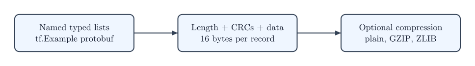
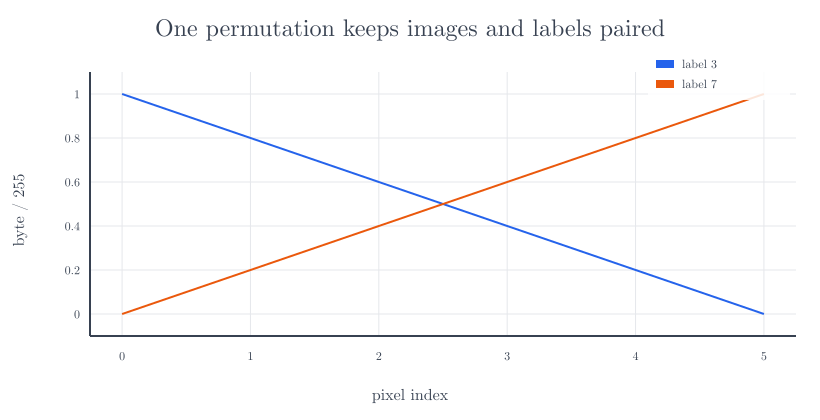

IDX Loading: Shape Headers and Paired Rows
Abstract
A tensor file must describe its dtype and shape accurately before its values can be trusted. We write a two-image IDX fixture with known bytes, load it through the generic reader, and check normalisation and matched image/label gathering. Damaged file lengths test the boundary between a valid tensor and an incomplete payload.
The method
An IDX header starts with two zero bytes, a type byte and a rank byte, followed by one big-endian 32-bit length per axis. Unsigned-byte rank-three image magic is 2051; rank-one label magic is 2049. If dimensions are d1..dr and element width is b, the complete file needs
read_idx returns one tensor, widening byte types to Int32. Generic tensor decoding does not establish a supervised dataset contract: the caller must check image rank, nonzero dimensions, matching image/label counts, label range and any required spatial shape. load_mnist supplies fixed-name 28 by 28 convenience loading. The raw reader accepts gzip by magic bytes. An NHWC channel axis may be added after loading; the same row permutation must gather both tensors. Reading and copying cost O(number of elements).
The concept diagram below is drawn by dm::graphics::Diagram. Its editable C++
source is the complete block below; regeneration uses the same datamunge toolchain
as the numerical examples. Exports consume the saved local SVG.
#include <dm/dm.hpp>
int main() {
std::filesystem::create_directories("build");
dm::graphics::Diagram diagram;
diagram.node("n0", {0.0, 0}, "IDX header\ntype, rank, dimensions");
diagram.node("n1", {5.2, 0}, "Exact tensor payload\nrow-major values");
diagram.node("n2", {10.4, 0}, "Paired gather + cast\nimages and labels");
diagram.edge("n0", "n1").edge("n1", "n2");
diagram.save_svg("build/idx_loader_concept.svg");
}
Simple examples
Two 2 by 3 images contain bytes increasing and decreasing by 51; both normalised means are .5. Their labels are 7 and 3. The file is generated locally by Python so the writer is independent of the C++ reader.
#include <dm/dm.hpp>
int main(){
namespace n=dm::nn;
std::filesystem::create_directories("build");
n::write_idx("build/idx_images",n::tensor({0,51,102,153,204,255,255,204,153,102,51,0},{2,2,3}).to(n::DType::Int32),true);
n::write_idx("build/idx_labels",n::tensor({7,3}).to(n::DType::Int32),true);
std::print("Wrote two unsigned-byte images and labels with big-endian shape headers.\n");
}Wrote two unsigned-byte images and labels with big-endian shape headers.
#include <dm/dm.hpp>
int main(){
namespace n=dm::nn;
const auto x=n::read_idx("build/idx_images"),y=n::read_idx("build/idx_labels");
const auto shuffled=n::cast(n::take_rows(x,{1,0}),n::DType::Float64)/255.;
const auto labels=n::take_rows(y,{1,0});
auto p=dm::graphics::RPlot::create();p.lines({0,1,2,3,4,5},n::take_rows(shuffled,{0}).to_vector<double>(),"label 3",{37,99,235})
.lines({0,1,2,3,4,5},n::take_rows(shuffled,{1}).to_vector<double>(),"label 7",{234,88,12})
.title("One permutation keeps images and labels paired").x_label("pixel index").y_label("byte / 255");
std::filesystem::create_directories("build");p.size(820,420).save_svg("build/idx_loader_rows.svg");
dm::dstruct::DataFrame t;t.add_column("label",labels.to_vector<double>());t.add_column("image_mean",n::mean(shuffled,{1,2}).to_vector<double>());
if(x.shape()!=n::Shape({2,2,3})||labels.at({0})!=3||shuffled.at({0,0,0})!=1)return 1;
std::print("{}\n",t.to_md());
}| label | image_mean |
|---|---|
| 3 | 0.5 |
| 7 | 0.5 |

Checking the theory
#include <dm/dm.hpp>
int main(){
namespace n=dm::nn;namespace d=n::data;
const auto original=d::ReadBinary("build/idx_images");int bad=0;
for(int mode=0;mode<3;++mode){auto b=original;if(mode==0)b.pop_back();if(mode==1)b.push_back(0);if(mode==2)b[0]=1;
d::WriteBinary("build/idx_bad",b);try{n::read_idx("build/idx_bad");}catch(const std::exception&){++bad;}}
if(bad!=3||original.size()!=4+4*3+12)return 1;
std::print("Header 16 bytes + payload 12 bytes = {} bytes.\n\nTruncated, trailing and bad-magic fixtures rejected: {}.\n",original.size(),bad);
}Header 16 bytes + payload 12 bytes = 28 bytes.
Truncated, trailing and bad-magic fixtures rejected: 3.
Conclusion
The shape header, exact byte count and pixel normalisation agree with independent struct-written files. Paired selection is part of the dataset contract, separate from tensor decoding. This small fixture does not claim to evaluate a recogniser or require MNIST to be downloaded.
References
- [LeCun et al., MNIST and the IDX file format](https://yann.lecun.com/exdb/mnist/).